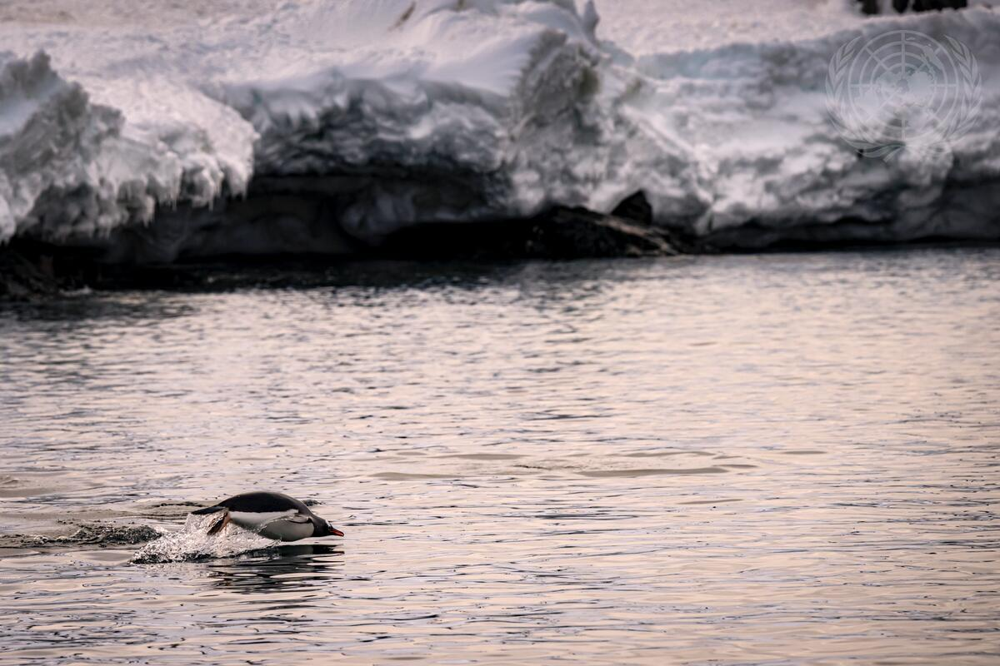

1. 🗓 The Significance of World Water Day
• Celebrated for over 30 years – more than just a day of remembrance.
•A time for reflection, assessment, and renewed global commitment to water.
•Water challenges are growing: too little, too much, or too polluted.
•Urgent action and stronger collaboration are vital – because there is no life without water.
2. ❄ Theme 2025: Glaciers Preservation
•Glaciers are Earth’s frozen water towers, essential for nearly 2 billion people.
•Their meltwater supports drinking water, agriculture, and clean energy for around 25% of the global population.
3. ⚠ Current Crisis
•Glaciers are melting rapidly – 2023 saw the largest glacier mass loss in 50 years.
Consequences include:
•Water shortages
•Increased disaster risks
•Rising sea levels
•Global impact on ecosystems and communities
4. ✅ Call to Action
•We must act now to preserve glaciers and combat climate change.
•Strengthen global commitments and scale up collective efforts.
•Use this moment to protect water, preserve glaciers, and secure our shared future.
5. 🌱 Final Message
Let this World Water Day be a time of renewed unity and real action — For our water. For our glaciers. For our people. For our planet.
 To go places and do things that have never been done before – that’s what living is all about.
World Water Day 2025 – an Opportunity for Collective Actions! For over three decades, World Water Day has been more than just a day of commemoration. Each year, it serves as a pivotal opportunity for reflection and evaluation that leads us to a renewed collective commitment for the world’s water.
The challenges facing our water are becoming ever more complex – too little, too much, or too polluted. With limited time, we must intensify and scale up tangible efforts to ensure lasting solutions. Collaboration is key – to building resilience and sustaining water as the source of our lives. Because there is no life without water.
World Water Day 2025: Glaciers Preservation The theme of this year’s World Water Day provides a unique opportunity. It encourages us to reflect on the current situation of the world’s glaciers. As the Earth’s frozen reservoirs, glaciers sustain the lives of nearly 2 billion people. Through glaciers and their meltwater, a quarter of the world’s population obtains drinking water, ensure food production, and generate clean energy.
Unfortunately, records show a rapid melting of the world’s glaciers. 2023 marked the largest mass loss of glaciers in the last 50 years. This threatens water supply and poses a risk of disasters to those who depend on glaciers for living. Furthermore, it contributes to sea level rise, impacting billions world-wide.
We must act now to preserve our glaciers. Commitments to action must be strengthened to preserve the world’s glaciers. Tackling climate change is among the key priorities we must address. By preserving glaciers, we are preserving our water and our future.
Let us use this World Water Day as a moment of renewed commitment and actions for our water, for our glaciers, for our people, and for our planet! Happy World Water Day 2025.